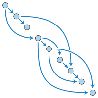
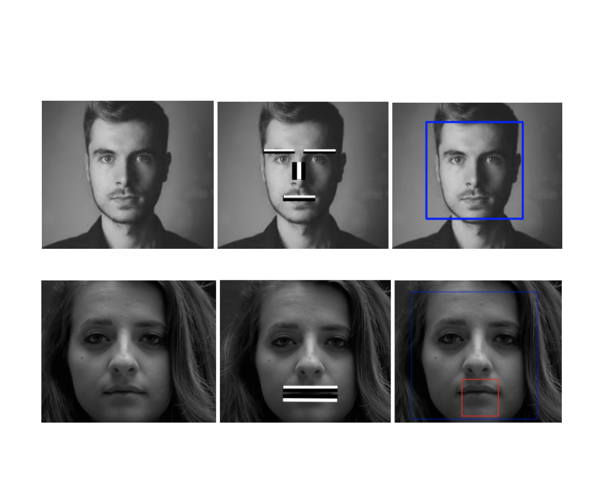
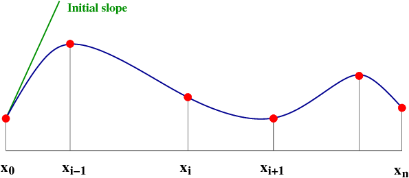
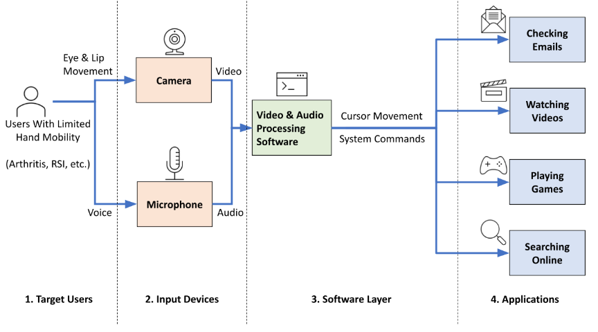
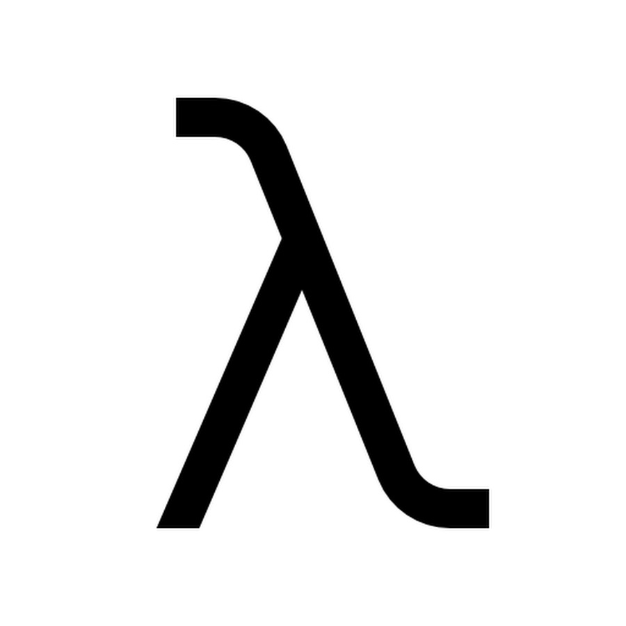

|
Ananth Goyal I'm a junior at UC Berkeley studying Electrical Engineering and Computer Science. In Summer 2024, I will be at Goldman Sachs in New York where I will be working on Quantitative Research. At Cal I work on a variety of research projects, teach the CS classes that I most enjoy, manage all tech-related things as the Technical Director of Delta Consulting, and work on Connex as the CTO. |
ResearchMy past research has spanned Computer Vision, Applied Mathematics (Approximation Theory), Soft Robotics Engineering, and Algorithms. My current research interests are in approximation schemes for NP-Hard optimization problems. |
|

|
A Near Linear-time Approximation Framework for Makespan
Scheduling of Unit Jobs
Ananth Goyal, Advisors: Prof. Jeffery Ullman, Prof. Jelani Nelson (Instructor) publication pending, 2023 course page / paper Developed a near-linear time approximation framework algorithm for the NP-Complete Unit Task Scheduling Problem by using price functions and weighting. |

|
Using Spasmodic Closure Patterns to Simplify Visual Voice Activity Detection
Ananth Goyal, Advisors: Prof. Jeffery Ullman Spring Nature (SN) Computer Science, 2021 publication / paper New simplistic algorithm for detecting human speech by monitoring spasmodic lip movements and closures. |

|
Constructing Segmented Differentiable Quadratics to Determine Algorithmic Runtimes and Model Non-Polynomial Functions
Ananth Goyal arxiv computational complexity, 2023 arxiv / paper Developed approach to approximate non-polynomial functions through recursive quadratic definitions; can help estimate algorithmic runtime complexities. |
|

|
Eyeudio: An Affordable Hands-Free Alternative to the Computer Mouse and Keyboard
Yiyang Cai, Hoang Nguyen, Yiqing Tao, Jordan Wong, Kanglang Tang, Yaowei Ma, Ananth Goyal, Vincent Wang Berkeley MENG Thesis, 2022 lab page / paper The Assistive Eyeudio Control Team is developing an affordable hands-free alternative for interacting with a computer. Eyeudio makes use of the camera and microphone on any common computer (i.e. laptop) to control the mouse cursor with eye tracking while carrying out specific commands with lip reading and speech recognition. |
Teaching |
|

|
CS 61A: The Structure and Interpretation of Computer Programs
Tutor: Resources: |

|
CS 70: Discrete Math and Probability Theory
Course Reader: Resources: |
Other |
Projects |
Speech-To-Text Online Application
Levels.fyi Internship Listing Scraper (Beta) Eyeudio Version 1 Connex |
Random |
|
Website design by Jon Barron and here is the source code. I just forked the repo and changed the code. |